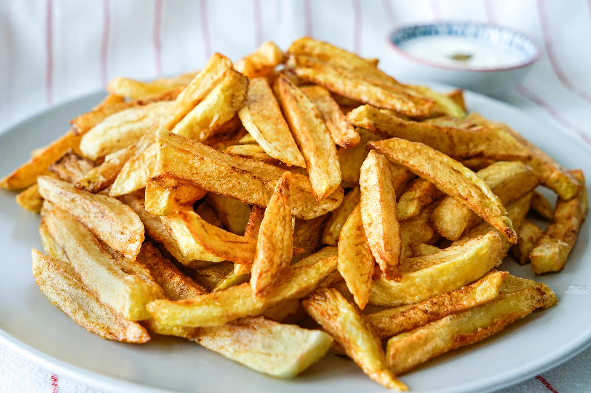

Patates kizarmtasi cok pratik yag ile yapilan bir yemektir
Patatesi cogu insan cok sever kizartmasini daha da cok sever
bu yemek belcikanin ana gururudur
- Patatesi soyun
- Patatesi parmak seklinde dilimleyin
- Yagi orta derece ateste isitmaya baslayin
- Kaynayan yagin icine patatesi atin
- Altin sarisi olan patatesi yagdan cikartin afiyet olsun